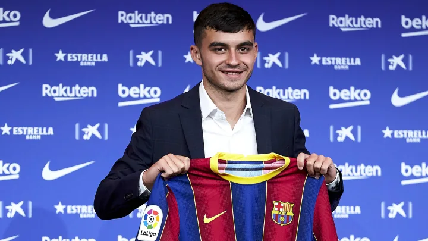
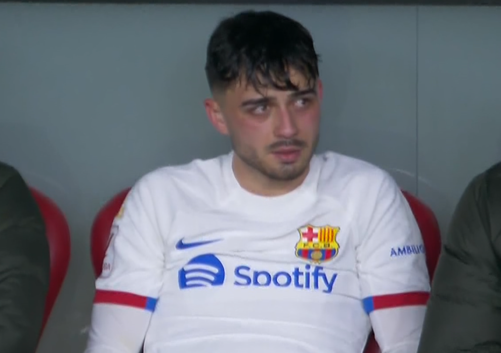
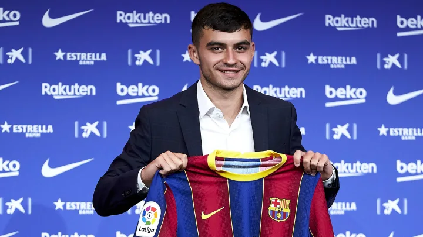
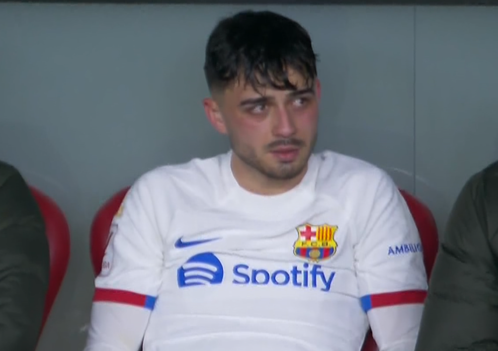
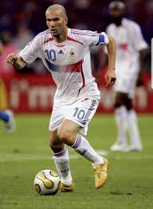
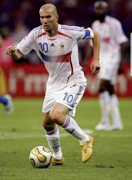

Ses Débuts Professionnels
 



Pedri fait ses débuts professionnels avec l'UD Las Palmas en 2eme divison espagnol où il fait rapidement sentation et encourage les plus grands clubs à miser sur lui. Grâce à ses performances, il rejoint le FC Barcelone pour seulement 5 millions d'euros.
Sa Premiere saison au Barca marque les esprits grâce à sa qualité technique qui rappelle à touts les supporters du Barca la légende Iniesta.
Durant cette premiere saison, il joue beaucoup, il joue même trop. En effet Pedri joue 52 matchs toute compétition confondue. Cela lui occasionnera des blessures musculaires qui le tiendront éloignées des terrains pendant de nombreuses semaines.
Son Style de Jeu & Ses Accomplissements
 "">

"">

Pedri est connu et reconnu pour avoir un style de jeux unique en son genre. Pedri est décrit comme un chef d'orchestre controlant le tempo au milieu du terrain.
Son style si classe lui vaut régulièrement des comparaisons avec les plus grands joueurs de l'histoire de ce sport: Tels Iniesta, Zidane et Pirlo.
Ses Duos Légendaires & Son Influence
Malgré son jeune âge, Pedri a déjà formé des duos légendaires avec plusieurs joueurs, notamment avec Pablo Gavi. Les deux ont formé un duo très complémentaire sur et en dehors du terrain. Un duo qui a marqué les esprits notamment du fait de leur style de jeu similaire à Iniesta et Xavi.
Pedri à également formé un autre duo légendaire, celui-ci de courte durée avec Lionel Messi. En effet ils n'évolueront seulement 1 an ensemble sur les terrains. Ce duo prendra fin après le depart de Messi pour le PSG.